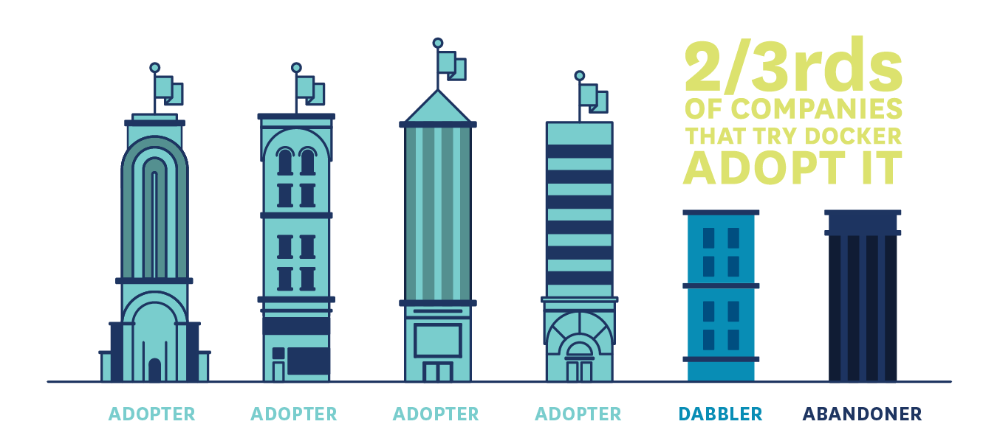
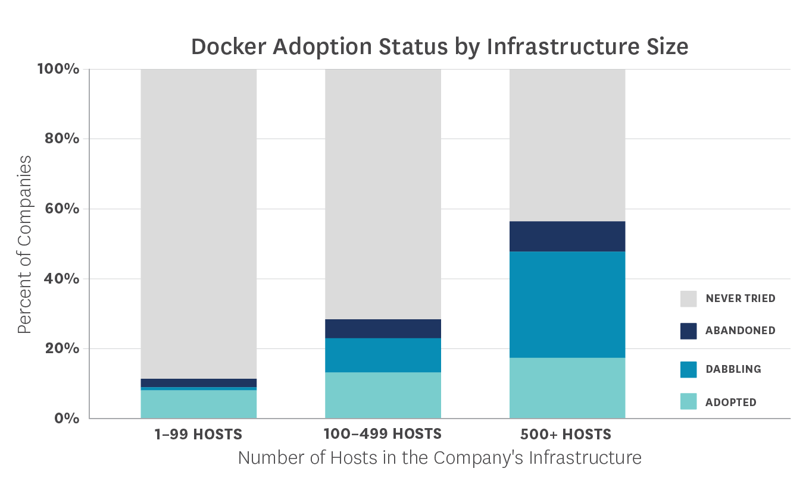
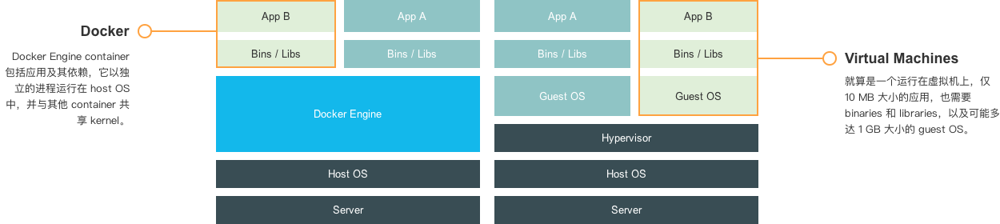
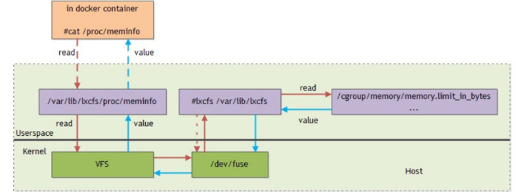
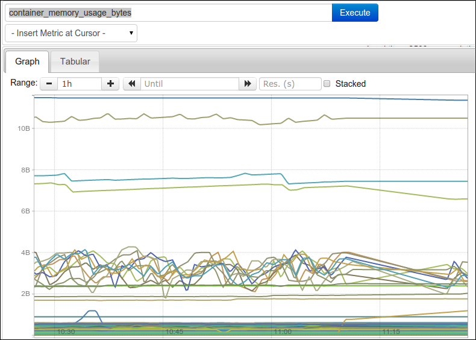
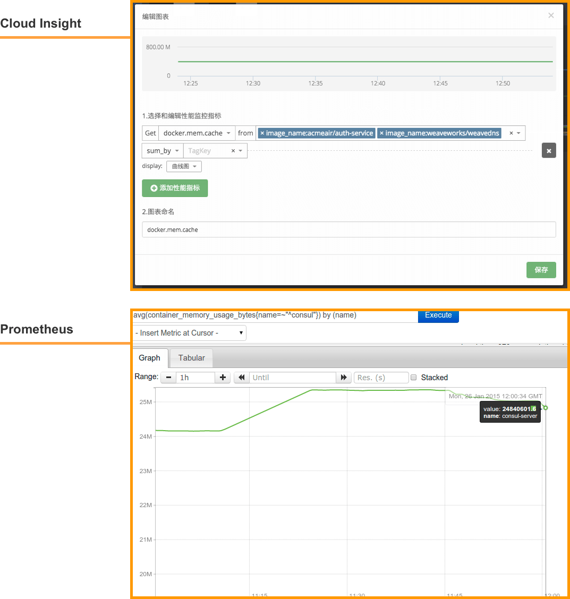
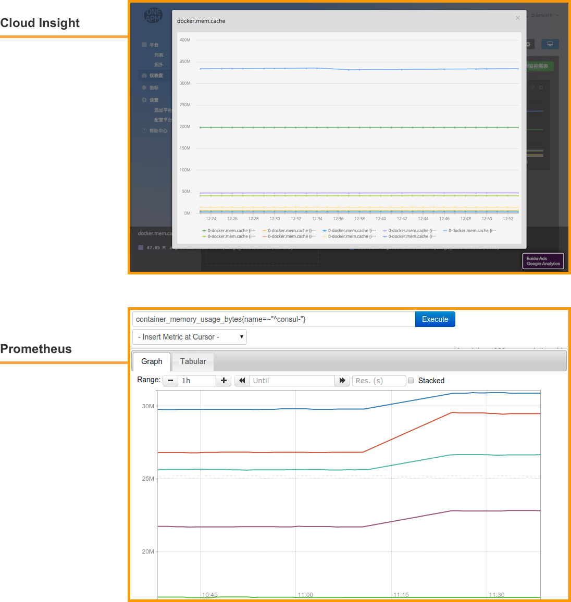
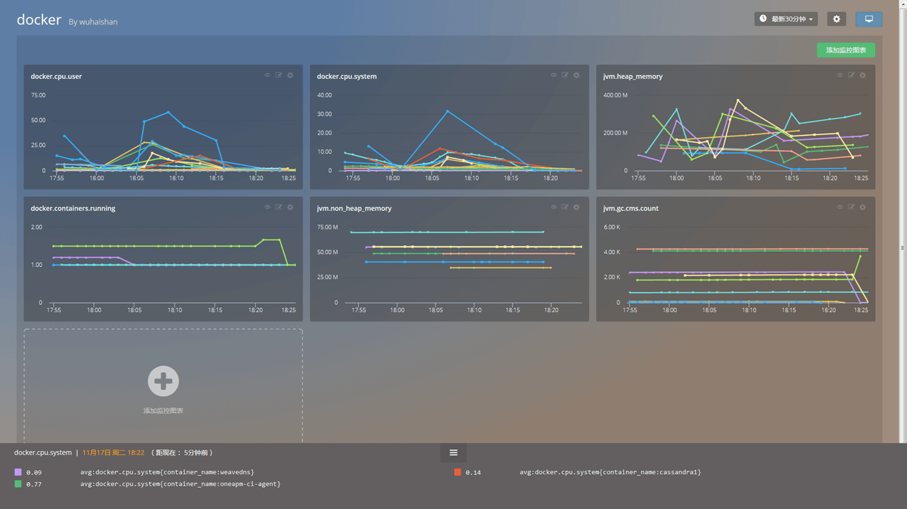
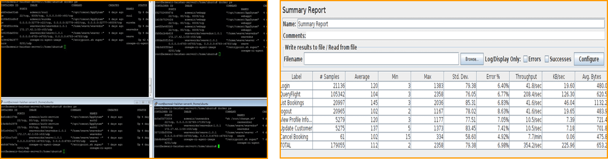
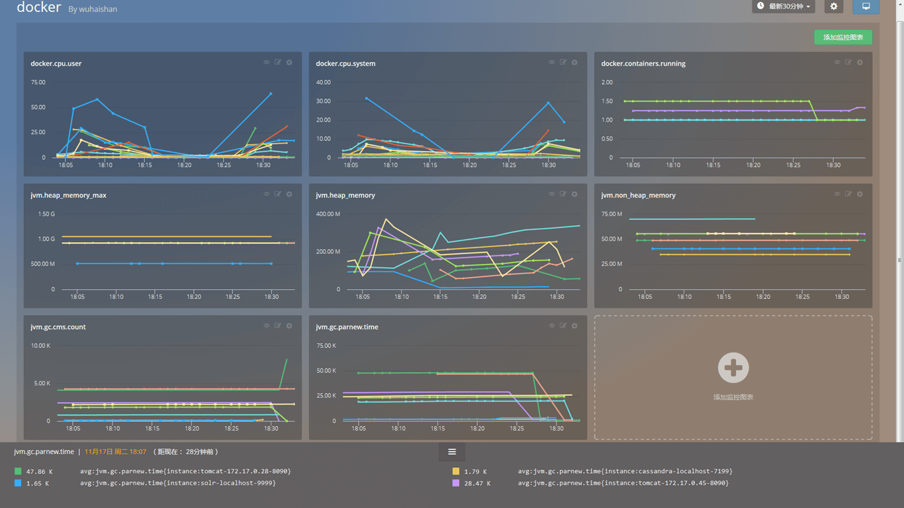

<!DOCTYPE html>
<html>
  <!-- OriginalSrc: http://blog.oneapm.com/apm-tech/306.html -->
  <head>
    <meta http-equiv="Content-Type" content="text/html"; charset="UTF-8" />
    <meta name="viewport" content="width=device-width, initial-scale=1.0" />

    <title>Docker 监控实战 - OneAPM 博客</title>
    
<link rel="stylesheet" type="text/css" href="assets/1548666691-c515b9e322bf18705ec81c1791ab4f52.css">

<link rel="stylesheet" href="assets/1548666691-a66ea74ae23d57f415cb3e144d899fbc.css" type="text/css">

<link rel="stylesheet" type="text/css" href="assets/1548666691-7c1afc55b9da9169061f82eddd8f896d.css">

<link rel="stylesheet" rev="stylesheet" href="assets/1548666691-a9499e9241b91485a7ea22513af78d94.css" type="text/css" media="all">

<link rel="stylesheet" href="assets/1548666691-60ddbac596491c53efd424ae1cfed98e.css">
<style>

</style>
<style>
@media print {#ghostery-purple-box {display:none !important}}
</style>
<style>
object,embed{                -webkit-animation-duration:.001s;-webkit-animation-name:playerInserted;                -ms-animation-duration:.001s;-ms-animation-name:playerInserted;                -o-animation-duration:.001s;-o-animation-name:playerInserted;                animation-duration:.001s;animation-name:playerInserted;}                @-webkit-keyframes playerInserted{from{opacity:0.99;}to{opacity:1;}}                @-ms-keyframes playerInserted{from{opacity:0.99;}to{opacity:1;}}                @-o-keyframes playerInserted{from{opacity:0.99;}to{opacity:1;}}                @keyframes playerInserted{from{opacity:0.99;}to{opacity:1;}}
</style>
<style>

.bdshare-button-style0-24 a{
width:24px;height:
24px;display:inline-block;
margin-right:5px;
background:url("");
cursor:pointer;
opacity:.8;
position:relative;}
.bdshare-button-style0-24 a:hover{opacity: 1}
.bdshare-button-style0-24 a.bds_tsina{background-position: 0 0;}
.bdshare-button-style0-24 a.bds_weixin{background-position: 0 -32px;}
.bdshare-button-style0-24 a.bds_qzone{background-position: 0 -65px;}
.bdshare-button-style0-24 a.bds_sqq{background-position: 0 -98px;}
 
</style>

    <style class="mx-wc-style">
      .mx-wc-main img {max-width: 100%;}
      .mx-wc-main{
        box-sizing: content-box;
        background-color: rgb(255, 255, 255) !important;
        margin: 0 auto;
        max-width: 800px;
        padding: 15px 15px 80px 15px;
      }

      .mx-wc-main > .clipping-information{
        text-align: left;
        margin-top: 20px;
        background-color: #eeeeee !important;
        padding: 15px;
        border-radius: 4px;
        color: #333;
        font-size: 14px !important;
        line-height: 22px !important;
      }
      .mx-wc-main > .clipping-information a {
        color: blue !important;
        text-decoration: underline !important;
      }
      .mx-wc-main > .clipping-information label {
        display: inline;
        text-transform: none;
      }
      .mx-wc-main > .clipping-information label > code {
        padding: 2px 8px;
        background-color: rgba(200, 200, 200, 0.7)!important;
        font-size: 14px;
      }

    </style>
  </head>
  <body style="background-color: #464646 !important; min-height: 100%; height: auto;" id="" class="single">
    <div class="mx-wc-main">
      <DIV id="content" class="container with-header-fix" style="display: block; float: none; position: relative; top: 0; left: 0; border: 0px; width: 100%; min-width:100%; max-width: 100%; min-height: auto; max-height: 100%; height: auto; padding: 0px; margin: 0px;"><DIV class="row" style="display: block; float: none; position: relative; top: 0; left: 0; border: 0px; width: 100%; min-width:100%; max-width: 100%; min-height: auto; max-height: 100%; height: auto; padding: 0px; margin: 0px;"><div id="main" class="col-lg-8 col-md-8 mx-wc-selected-elem" style="background-color: rgb(255, 255, 255); box-shadow: rgba(0, 0, 0, 0.2) 0px 1px 4px; border-radius: 3px; padding-bottom: 15px; float: none; position: relative; top: 0px; left: 0px; margin: 0px; flex: unset; width: 100%; max-width: 100%; box-sizing: border-box;">
          		<div class="post-single cate3  auth19">
  <div class="main-head">
    <h2 style="margin-top:0;">
      <a href="http://blog.oneapm.com/apm-tech/306.html">Docker 监控实战</a>
    </h2>
    <div class="post_info">
      <i class="iconfont"></i>
      <a href="http://blog.oneapm.com/author-19.html">
        <span class="author-name">张璐</span>
      </a>      
      <i class="iconfont"></i>
      <span class="article-time">2015-11-26</span>
      <div class="details">
        <div class="readNum" title="浏览量">
          <i class="iconfont"></i>
          <span>8757</span>
        </div>
        <div class="commentNum" title="评论数">
          <i class="iconfont"></i>
          <span>0</span>
        </div>
        <div class="info_last_tags type_tags">
                      <a href="http://blog.oneapm.com/tags-Docker.html"><span>Docker</span></a>
                      <a href="http://blog.oneapm.com/tags-Cloud+Insight.html"><span>Cloud Insight</span></a>
                  </div>
      </div>
    </div>
  </div>
  <div class="main-content">
    
            <p>如今，越来越多的公司开始使用 <a title="Docker" href="http://blog.oneapm.com/tags-Docker.html" target="_blank" class="kylink">Docker</a> 了，现在来给大家看几组数据：</p>

<blockquote>
  <p>2 / 3 的公司在尝试了 Docker 后最终使用了它</p>
</blockquote>

<p>也就是说 Docker 的转化率达到了 67%，而转化时长也控制在 60 天内。</p>

<p style="text-align: center;"></p>

<blockquote>
  <p>越大型的公司越早开始使用 Docker</p>
</blockquote>

<p>研究发现主机数量越多的公司，越早开始使用 Docker。而主机数量多，在这个研究里就默认等同于是大型公司了。</p>

<p style="text-align: center;"></p>

<h2 id="docker">Docker 优势</h2>

<p>那为什么 Docker 越来越火呢？一谈起 Docker 总是会跟着让人联想到轻量这个词，甚至会有一种通过 Docker 启动一个服务会节省很多资源的错觉。然而 Docker 的「轻」也只是相对于传统虚拟机而已。</p>

<p>传统虚拟机和 Docker 的对比如图：</p>

<p style="text-align: center;"></p>

<p>从图中可以看出 Docker 和 虚拟机的差异，虚拟机的 Guest OS 和 Hypervisor 层在 Docker 中被 Docker Engine 层所替代，Docker 有着比虚拟机更少的抽象层。</p>

<p>由于 Docker 不需要通过 Hypervisor 层实现硬件资源虚拟化，运行在 Docker 容器上的程序直接使用实际物理机的硬件资源。因此在 CPU、内存利用率上 Docker 略胜一筹。</p>

<p>Docker利用的是宿主机的内核，而不需要 Guest OS，因此，当新建一个容器时，Docker 不需要和虚拟机一样重新加载一个操作系统内核，因此新建一个 Docker 容器只需要几秒钟。</p>

<p><strong>总结一下 Docker 容器相对于 VM 有以下几个优势：启动速度快、资源利用率高、性能开销小。</strong></p>

<h2 id="docker">Docker 监控方案</h2>

<p>那么，Docker 如何监控呢？可能具体问题要具体分析。但是似乎大家都在使用开源的监控方案，来解决 Docker监控的问题。</p>

<p>就拿腾讯游戏来说吧，我们看看尹烨（腾讯互娱运营部高级工程师， <a target="_blank" rel="external nofollow" href="http://www.infoq.com/cn/articles/how-tencent-game-use-docker">干货 | 腾讯游戏是如何使用 Docker 的？</a> ）怎么说：</p>

<blockquote>
  <p>容器的监控问题也花了我们很多精力。监控、告警是运营系统最核心的功能之一，腾讯内部有一套很成熟的监控告警平台，而且开发<a title="运维" href="http://blog.oneapm.com/tags-%E8%BF%90%E7%BB%B4.html" target="_blank" class="kylink">运维</a>同学已经习惯这套平台，如果我们针对 Docker 容器再开发一个监控告警平台，会花费很多精力，而且没有太大的意义。所以，我们尽量去兼容公司现有的监控告警平台。每个容器内部会运行一个代理，从 /proc 下面获取 CPU、内存、IO 的信息，然后上报公司的监控告警平台。但是，默认情况下，容器内部的 proc 显示的是 Host 信息，我们需要用 Host 上 cgroup 中的统计信息来覆盖容器内部的部分 proc 信息。我们基于开源的 lxcfs，做了一些改造实现了这个需求。</p>
</blockquote>

<p style="text-align: center;"></p>

<blockquote>
  <p>这些解决方案都是基于开源系统来实现的，当然，我们也会把我们自己觉得有意义的修改回馈给社区，我们给 Docker、Kubernetes 和 lxcfs 等开源项目贡献了一些 patch。融入社区，与社区共同发展，这是一件很有意义的事情。</p>
</blockquote>

<p>在没有专业运维团队来监控 Docker 的情况下，并且还想加快 Docker 监控的日程，怎么办呢？</p>

<p>为了能够更精确的分配每个容器能使用的资源，我们想要实时获取容器运行时使用资源的情况，怎样对 Docker 上的应用进行监控呢？Docker 的结构会不会加大监控难度？</p>

<p>我们都了解， container 相当于小型 host，可以说存在于 hosts 与应用之间的监控盲区，无论是传统的基础组件监控还是应用性能监控的方式，都很难有效地监控 Docker。了解了一下现有的 Docker 相关监测 App 和服务，包括简单的开源工具和复杂的企业整体解决方案，下面列举其中的几种作为参考：</p>

<h4 id="1cadvisor">1. cAdvisor</h4>

<p>谷歌的 container introspection 解决方案是 cAdvisor，这是一个 Docker 容器内封装的实用工具，能够搜集、集料、处理和导出运行中的容器的信息。通过它可以看到 CPU 的使用率、内存使用率、网络吞吐量以及磁盘空间利用率。然后，你可以通过点击在网页顶部的 Docker Containers 链接，然后选择某个容器来详细了解它的使用情况。cAdvisor 部署和使用简单，但它只可以监视在同一个 host 上运行的容器，对多节点部署不是太管用。</p>

<h4 id="2cloudinsight">2. <a title="Cloud Insight" href="http://blog.oneapm.com/tags-Cloud+Insight.html" target="_blank" class="kylink">Cloud Insight</a></h4>

<p>在我们列举的几个监控 Docker 的服务或平台中，这是唯一一款国内产品。Cloud Insight 支持多种操作系统、云主机、数据库和中间件的监控，原理是在平台服务仪表盘和自定义仪表盘中，采集并处理 Metric，对数据进行聚合与分组等计算，提供曲线图、柱状图等多样化的展现形式。优点是监控的指标很全，简单易用，但目前正式版还未上线，可以期待一下。</p>

<h4 id="3scout">3. Scout</h4>

<p>Scout 是一款监视服务，并不是一个独立的开源项目。它有大量的插件，除了 Docker 信息还可以吸收其他有关部署的数据。因此 Scout 算是一站式监控系统，无需对系统的各种资源来安装各种不同的监控系统。 Scout 的一个缺点是，它不显示有关每个主机上单独容器的详细信息。此外，每个监控的主机十美元这样略微昂贵的价格也是是否选择 Scout 作为监控服务的一个考虑因素，如果运行一个有多台主机的超大部署，成本会比较高。 </p>

<h4 id="4sematext">4. Sematext</h4>

<p>Sematext 也是一款付费监控解决方案，计划收费方案是3.5美分/小时。同样也支持 <a href="http://www.oneapm.com/ci/docker.html">Docker 监控</a>，还包括对容器级事件的监测（停止、开始等等）和管理容器产生的日志。 </p>

<h2 id="docker">Docker 监控实践</h2>

<h3 id="prometheus">Prometheus</h3>

<p><em>我们先来说说一套开源的 Docker 监控方案：<a target="_blank" rel="external nofollow" href="https://prometheus.github.io/">Prometheus</a>；而此篇文字的原文地址：<a target="_blank" rel="external nofollow" href="http://5pi.de/2015/01/26/monitor-docker-containers-with-prometheus/">Monitor Docker Containers with Prometheus</a>。</em></p>

<p>Prometheus 由 SoundCloud 发明，适合于监控基于容器的基础架构。Prometheus 特点是高维度数据模型，时间序列是通过一个度量值名字和一套键值对识别。灵活的查询语言允许查询和绘制数据。它采用了先进的度量标准类型像汇总（summaries），从指定时间跨度的总数构建比率或者是在任何异常的时候报警并且没有任何依赖，中断期间使它成为一个可靠的系统进行调试。</p>

<p>Prometheus 支持维度数据，你可以拥有全局和简单的指标名像 <code>container_memory_usage_bytes</code> ，使用多个维度来标识你服务的指定实例。</p>

<p>我已经创建了一个简单的 <code>container-exporter</code> 来收集 Docker 容器的指标以及输出给 Prometheus 来消费。这个输出器使用容器的名字，id 和 镜像作为维度。额外的 <code>per-exporter</code> 维度可以在 <code>prometheus.conf</code> 中设置。</p>

<p>如果你使用指标名字直接作为一个查询表达式，它将返回有这个使用这个指标名字作为标签的所有时间序列。</p>

<pre><code>container_memory_usage_bytes{env="prod",id="23f731ee29ae12fef1ef6726e2fce60e5e37342ee9e35cb47e3c7a24422f9e88",instance="http://1.2.3.4:9088/metrics",job="container-exporter",name="haproxy-exporter-int",image="prom/haproxy-exporter:latest"}    11468800.000000  

container_memory_usage_bytes{env="prod",id="57690ddfd3bb954d59b2d9dcd7379b308fbe999bce057951aa3d45211c0b5f8c",instance="http://1.2.3.5:9088/metrics",job="container-exporter",name="haproxy-exporter",image="prom/haproxy-exporter:latest"}    16809984.000000 

container_memory_usage_bytes{env="prod",id="907ac267ebb3299af08a276e4ea6fd7bf3cb26632889d9394900adc832a302b4",instance="http://1.2.3.2:9088/metrics",job="container-exporter",name="node-exporter",image="prom/container-exporter:latest"}  

...
...
</code></pre>

<p>如果你运行了许多容器，这个看起来像这样：</p>

<p style="text-align: center;"></p>

<p>为了帮助你使得这数据更有意义，你可以过滤（filter） and/or 聚合（aggregate） 这些指标。</p>

<p>使用 Prometheus 的查询语言，你可以对你想的任何维度的数据切片和切块。如果你对一个给定名字的所有容器感兴趣，你可以使用一个表达式像 <code>container_memory_usage_bytes{name="consul-server"}</code>，这个将仅仅显示 <code>name == "consul-server"</code> 的时间序列。</p>

<p>像多维度的数据模型，来实现数据聚合、分组、过滤，不单单是 Prometheus。OpenTSDB 和 InfluxDB 这些时间序列数据库和系统监控工具的结合，让系统监控这件事情变得更加的多元。</p>

<p>接下来，我们为大家介绍国内一家同样提供该功能的监控方案：<a href="http://www.oneapm.com/ci/feature.html">Cloud Insight</a>。有关其数据聚合的功能可以阅读：<a href="http://news.oneapm.com/query-metric/">数据聚合 &amp; 分组：新一代系统监控的核心功能</a>。</p>

<p>现在我们来对比 Prometheus 和 Cloud Insight 在数据聚合、分组（切片）上的展现效果和功能。</p>

<p><strong>数据聚合</strong></p>

<p>根据不同的 Container Name 或 Image Name 对内存使用量或 Memeory Cache 进行聚合。</p>

<p style="text-align: center;"></p>

<p><strong>数据分组（切片）</strong></p>

<p>根据不同的 Container Name 或 Image Name 对内存使用量或 Memeory Cache进行分组（切片）。</p>

<p style="text-align: center;"></p>

<h2 id="docker">Docker 监控实战</h2>

<p>单方面监控 Docker 可能并不太适合与业务挂钩的应用，当业务量上涨，不单单是 Docker 的负载上升，其他 JVM 指标也能也会出现上升的趋势。</p>

<p>我们尝试使用一个支持比较多中间件、数据库、操作系统、容器的 Cloud Insight 来说明这个实际的场景。</p>

<h3 id="cloudinsight">Cloud Insight</h3>

<p><a href="http://www.oneapm.com/ci/feature.html?utm_source=Community&amp;utm_medium=Article&amp;utm_term=201511DockerPractice&amp;utm_campaign=CiArti&amp;from=jscwlhna">Cloud Insight</a> 由于是一个 <a title="SaaS" href="http://blog.oneapm.com/tags-SaaS.html" target="_blank" class="kylink">SaaS</a> 监控方案，相对来说它的安装和部署都比较简单。在这次监控实战中，我们以 AcmeAir 为实验对象：一个可以模拟压力的电子商务类应用。</p>

<p>AcmeAir 是一款由原 IBM 新技术架构部资深工程师 Andrew Spyker，利用 Netflix 开源的 Netflix OSS 打造的开源电子商务应用。此应用具有如下特性：</p>

<ol>
<li>模拟提供航班订票服务。用户可以通过移动设备或者 web 浏览器，完成新用户注册，用户登录，航班查询，订票等操作。  </li>
<li>AcmeAir 融入了 Docker，微服务架构等理念。并采用 Tomcat、Node.js、WebSphere Application Server、WebSphere Extreme Scale、MongoDB、<a title="Cassandra" href="http://blog.oneapm.com/tags-Cassandra.html" target="_blank" class="kylink">Cassandra</a> 分别打造了不同版本的实现。  </li>
<li>AcmeAir 利用 JMeter 模拟用户行为。可通过动态调整用户数量，模拟产生各种压力的事物流量。并可在应用中预先植入错误代码，模拟各种故障场景。该应用可做为压力测试，终端<a title="用户体验" href="http://blog.oneapm.com/tags-user-experience.html" target="_blank" class="kylink">用户体验</a>异常检测，故障诊断等各种测试场景的测试用例。</li>
</ol>

<p style="text-align: center;"></p>

<p>首先，我们要打开 Cloud Insight 监控，还好 Cloud Insight 安装简单，一条命令即可。接着，我们新建一个用于此次监控的仪表盘，依次将想要获取的指标统统添加进去。比如，选中 <code>jvm.non_heap_memory</code> 这个指标，选择按照 instance 分组。</p>

<p>我们添加以下指标：</p>

<pre><code>docker.cpu.user  
docker.cpu.sysytem  
docker.containers.running  
jvm.heap_memory  
jvm.non_heap_memory  
jvm.gc.cms.count  
jvm.heap_memory_max  
jvm.gc.parnew.time  
</code></pre>

<p>添加后，由自定义仪表盘中的显示效果如图：</p>

<p style="text-align: center;"></p>

<p>应用 Acme 部署在四台 servers 上，我们开启四台 servers, 然后用 JMeter 给应用加压。</p>

<p style="text-align: center;"></p>

<p>随着时间 JMeter 不断给应用加压，当 users 人数达到 188 时，我们再来看一下仪表盘的视图。</p>

<p style="text-align: center;"></p>

<p>如图，性能数据发生了变化，根据 JMeter 里的数据，CPU 占用和错误率都有所提升；与此同时，根据 Cloud Insight 里的曲线显示，在指标 <code>docker.cpu.user</code> 这幅图中，蓝色的线所代表的 Container CPU 占用率已经超过 50%，逐渐接近 75%，系统剩余的 CPU 资源逐渐下降。</p>

<p>而指标 <code>docker.cpu.system</code> 图中同样可以看到蓝色的那条数据在 18：29 左右出现了一个波峰，代表系统 CPU 资源消耗突然增大。通过这两幅图，我们可以定位到 CPU 占用率过高的 Container ，及时而主动地去了解性能瓶颈，从而优化性能，合理分配资源。</p>

<p>再看 <code>jvm.heap_memory</code> 指标，图中几条曲线在 18:20 之后逐渐升高，黄色曲线在 18：28 左右出现波峰，浅蓝色曲线数值较高，用 <code>jvm.heap_memory</code> 的值去比左图 <code>jvm.heap_memory_max</code> 的值，将能更清楚的反映 JVM 堆内存的消耗情况。</p>

<p>而 <code>jvm.gc.parnew.time</code> 图中显示了新生代并行 GC 的时间数据。GC 是需要时间和资源的，不好的 GC 会严重影响系统的系能，良好的 GC 是 JVM 高性能的保证。 </p>

<p>无法被监控的软件是很危险的，通过解读这张 Docker 仪表盘总览图，我们可以了解到 Docker 实时性能状况，精准定位到性能薄弱的环节，从而优化我们的应用。</p>

<h2 id="">总结</h2>

<p>Docker 监控相比其他的数据库、系统、中间件监控，要复杂一些。由于需要表征不同 Container 的性能消耗，来了解不同应用的运行情况，所以数据的聚合、切片（分组）和过滤，在 Docker 监控中成为了必备功能。</p>

<p>所以我们推荐使用了时间序列数据库，或者类似设计逻辑的监控方案，如：Prometheus 和 Cloud Insight。</p>

<p>而 Docker 单方面的监控，可能不太满足一些大型公司的需求，如果一个工具在监控 Docker 同时能够监控其他组件，那就更好了。</p>

<p>国外出现了 Graphite、Grafana 和 Host Graphite，能够让用户将不同数据来源都集中在同一个地方进行展现；而国内 <a href="http://www.oneapm.com/ci/feature.html?utm_source=Community&amp;utm_medium=Article&amp;utm_term=201511DockerPractice&amp;utm_campaign=CiArti&amp;from=jscwlhna">Cloud Insight</a> 似乎也是这样的思路。</p>
        <!--页面关键词匹配耗时0.078125秒-->  </div>
  <div class="post_nav">
  <p style="line-height: 2.5;background-color: #eee;margin-bottom: 20px;color: #aaa;font-size: 14px;">本站内容未经允许不得转载</p>
          <a class="l" href="http://blog.oneapm.com/apm-tech/257.html" title="Android Studio优化技巧">« 上一篇</a>
      <a class="r" href="http://blog.oneapm.com/apm-tech/266.html" title="黑色星期五，美国电商 CTO 们最关注的6大问题"> 下一篇 »</a>
      </div>
  
  <div id="divSubscibe" style="margin-top:25px;">
    <div class="subscibeline">
      <div class="bdsharebuttonbox bdshare-button-style0-24" data-bd-bind="1548661003748"> 
        <a href="http://blog.oneapm.com/apm-tech/306.html#" class="bds_weixin" data-cmd="weixin" title="分享到微信"></a>
        <a href="http://blog.oneapm.com/apm-tech/306.html#" class="bds_tsina" data-cmd="tsina" title="分享到新浪微博"></a>
        <a href="http://blog.oneapm.com/apm-tech/306.html#" class="bds_qzone" data-cmd="qzone" title="分享到Qzone"></a>
        <a href="http://blog.oneapm.com/apm-tech/306.html#" class="bds_sqq" data-cmd="sqq" title="分享到QQ好友"></a>
      </div>
      
      <button id="mySubscibe" style="float:right;margin-top:6px;">
        <span>订阅</span>
      </button>
    </div> 
  </div>
    
<div class="commentlist">

<label id="AjaxCommentBegin"></label>
<!--评论输出-->

<!--评论翻页条输出-->
<div class="pagebar commentpagebar">
</div>
<label id="AjaxCommentEnd"></label>

</div>


<!--评论框-->
<div class="msgcontainer">
	<div class="commentpost" id="comment">
	    <h4>发表评论:</h4>
	    <div class="msgauthorpost">
	    	<div class="msgimgpost">
              	<a name="cmt">
              	                    	
                	              	</a>
              		    	</div>
	    </div>
	    
		<form id="frmSubmit" target="_self" method="post" action="http://blog.oneapm.com/zb_system/cmd.php?act=cmt&amp;postid=306&amp;key=e811c58b713bb20ade28d36c09dd08a6">
			
			
							<p><label for="name">名称</label><input type="text" name="inpName" id="inpName" class="text" placeholder="请输入名称" size="28" tabindex="1"><label style="color:#ccc">必填</label></p>
				<p><label for="email">邮箱</label><input type="text" name="inpEmail" id="inpEmail" class="text" placeholder="请输入邮箱" size="28" tabindex="2"></p>
									<div>
				<label for="name">内容</label>
				<textarea name="txaArticle" id="txaArticle" class="text" cols="50" rows="4" tabindex="5"></textarea>
			</div>
			<div class="msgsubmit">
				<input name="sumbit" type="submit" tabindex="6" value="提交" onclick="return VerifyMessage()" class="button">
			</div>
		</form>
	</div>
</div>
		
    <div class="clear"></div>
</div>    	    </div></DIV></DIV>
      
        <hr />
        <!-- clipping information -->
        <div class="clipping-information">
          <label>Original url: <a href="http://blog.oneapm.com/apm-tech/306.html" target="_blank" referrerpolicy="no-referrer" rel="noopener noreferrer">Access</a></label><br />
          <label>Created at: 2019-01-28 17:11:31</label><br />
          <label>Category: default</label><br />
          <label>Tags: none</label>
        </div>
    </div>
  </body>
</html>